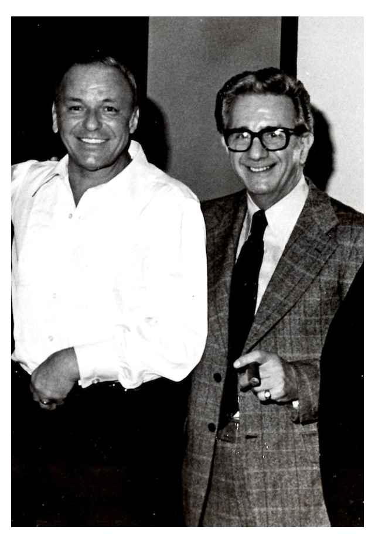
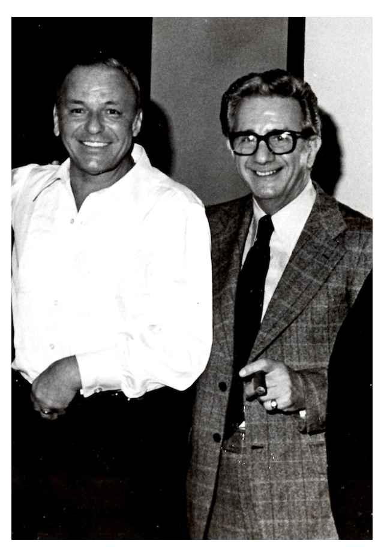

Connections with the Mafia
Sinatra was seen as a "tough working-class Italian American" he took on this stereotype and sort of embraced it. He once said if it wasn’t for his love of music he’d have "probably have ended in a life of crime"
In Sinatra’s early days mobster and Mafia Boss Willie Morretti helped Sinatra out get out of a contract with Tommy Dorsey. Sinatra was present in a Mafia conference in Havana in ’46. He was present with some of the most famous and dangerous mobsters at the time including Lucky Luciano.
The FBI kept up to 2,403 pages on Sinatra because of his connections with the mafia, his Thoughts and actions on politics and his Friendship with John F. Kennedy. He was kept under surveillance by the FBI for up to five decades.
In 1960 Sintra bought a share in the famous Cal Neva Lodge & Casino. Its right on the border and is halved by Nevada and California. It attracted the likes of the other Rat Pack members, Red Skelton, Marilyn Monroe, Victor Borge, Joe E. Lewis etc. His gambling license was temporarily revoked by the Nevada Gaming Control Board in 1963 after mobster Sam Giancana was spotted on the premises.
 
